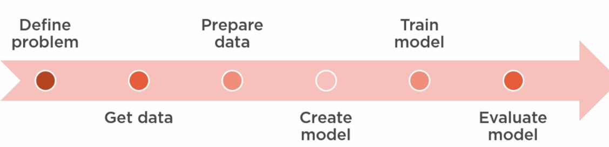
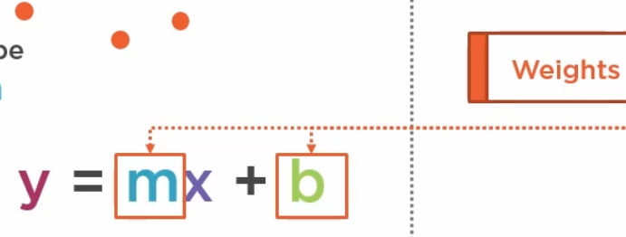
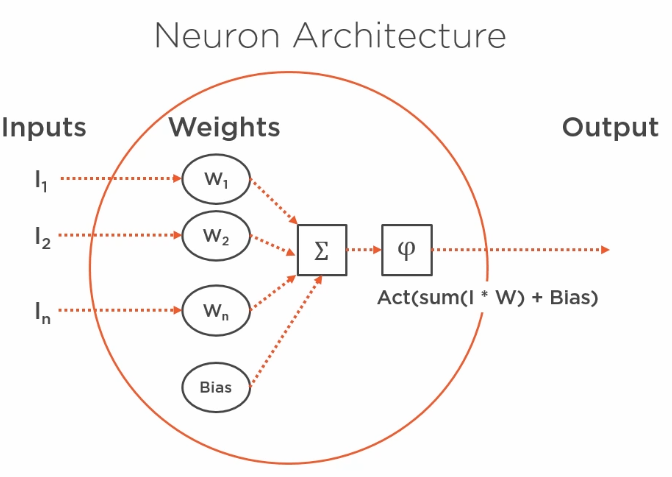

Tsfx = tensorflow extensions
tensorflow light – used for lightweight applications (integrated/phones/IoT/etc)
tensorflow alternate languages: Python, C++, Javascript, and Swift(new)
C++ for embedding of speed
swift is supposed to be faster but new and not fully supported?
Dense layer = every input connects to a layer output
google colaboratory: http://colab.research.google.com/ (requires google account)
can use GPU/TPU
edit-> notebook setings-> change hardware accelerator to GPU (nvidia) or TPU (google)
no guarantee that a GPU/TPU will be available at runtime
TPU = tensor processing unit (as designed by google)

Weights – alternate name for coefficients

mimicking
linear regression
neuron weights are slope and intercept
adjust the weights until prediciton matches training
mini-batch gradient descent used to work to minimization of loss function
Process
initialize weights
repeat until loss acceptable or max epochs reached
foreach mini-batch
make predictions
compute loss function
compute gradient to minimize loss
update m and b based on gradient (using learning rate)
next epoch
intercept is referred to as 'bias' in certain cases
only requires a single neuron
tensors are data flowing through the model – n dimensional structure used to represent data
god for generalized mathematical operations
properties
rank = # of dimensions (0: point; 1:vector; 2: matrix; 3: cube; 4+: n-tensor)
shape = # vectors and # values in each vector (0:[], 1:[5], 2:[5,7], 3:[5,7,13]) – directly related to rank
datatype: e.g. float32, float64, in8/16/32/64, uint8/16(unsigned int), string, bool, complex64/128, quant8/16 (quantized), quint8
quantized – scaled to reduce size for faster processing (75%) and possible reduced accuracy
keras is tensorflow's high-level API
tensorflow NN Steps
preprocessing (e.g. scale data)
create the model with activation function, data shape, weight/kernel initializer, and bias initializer
compile the model with loss function and optimizer
can request a metric to use as well e.g. metrics = ['accuracy']
train_test_split 80/20 or 70/30
give random_state seed if you want reproducability
train: run model.fit(X, Y, epochs, batch_size, verbose)
loss should go down with subsequent epochs
test data can be passed to evaluate progress over time
callback to tensorboard if using it
call model.predict on training data to get predicted values
check accuracy
visualize loss – check for convergence (loss levels out)
add more data or do more training?
may need to apply inverse transform to get data back to original scale
evaluate model with test data
compare MSE from test vs train
Neuron inputs from sensors or other neurons
Neuron
1+ inputs – combined in neuron
trainable weights (for each input)

activation function applied to (sum of inputs times weights) plus bias
needed for non-linear modeling
prevents a single neuron from growing too large
vanishing gradient – small values fade to 0 – stops learning
Common ones
Sigmoid – output values 0 to 1 – flat tails limit impact of large values – vanishing gradient
Tanh (hyperbolic tangent) -1 to 1 – flatter tails – vanishing gradient
ReLU – rectified linear unit: 0 to x range; equation = max(0,x) – everything < 0 is zero, everything above is itself – con: lets through large values (possible blowing up) widely used
Leaky ReLU – lets through some negative but minimizes them
SoftMax – (classification last layer – computes probability that the input belongs to each of the classes) – probabilities must add to 100%
1 output – might get passed as input for multiple downstream neurons
hidden layers – catpure relationships between the data
forward propagation – passing values forward through the NN
Loss – measured across multiple samples and classes
categorical cross entropy (common) – calculates loss across multiople classes
hyperparameter that we need to specify
works with optimizer (commonly mini-batch SGD)
back propagation of error (backprop) – adjust weights and biases to reduce loss
must be compitible with loss function
GPU/TPU helps with these SGD calculations
MNIST [hand drawn numbers] issues – (modified national institue for standards and technology)
too easy (>99% accuracy common)
overused
not repersentative of modern problems
fashion mnist – grayscale, 28x28, 70K rows
sparse categorical cross-entropy – loss function for classification
scaling data can prevent overflows when running the model
Flatten layer – transformation layer that convers 28x28 array to 1x784
input shape is only needed for first layer – keras implicitly handles shapes passed from prior layers
how many neurons to use – keep it between the number of inputs and the number of outputs (e.g. 784 inputs >= 128 neurons >= 10 output classes)
use model.summary to get a summary of NN layers
param # = inputs * weights * biases
model.compile does not take long – model.fit (training) takes the longest time
put a %% time magic on these cells
adam optimizer – variation fo mini-batch gradient descent
large diff bewteen training score and testing score = model can be improved
model has overfit (memorized the training data)
tensorboard – used to evaluate model performance
run from CLI and specify log directory where data from run was stored
starts a weeb server – default url: http://localhost:6006/
must be run after model fit?
Sections
scalars – data collected from our model
graphs – graphs for internal metrics from tensorflow
distributions – value dists
more
if graphs look funny tensorboard is probably reusing an old PID that needs to be killed
when run from CLI – old files seem to be used even when tensorboard is stopped and restarted
overfitting solutions
reduce complexity – reduce neurons or layers
randomly drop neuron output (set to 0) – regularize
add a keras dropout layer
stop training early (when loss increases again, or accuracy decreases)
can't clean up logs directory – no permission on certain files
error varies access denied or permission error
windows says that all users do not have read access (incl adminstrators)
TAKEOWN /f %DIRECTORY_NAME% /r /d yfails
ICACLS %DIRECTORY_NAME% /grant administrators:F /tfails
files can be deleted only after stopping the jupyter server – stopping/restarting the kernel for the notebook does not help